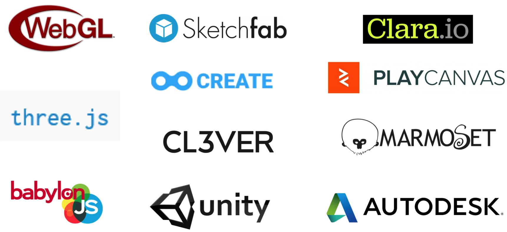

Select Theme

FORGE VIEWER
Another way to view 3D models in the web browser
Zhong Wu
/ Forge Developer Advocate
@
Forge Partner Development, Autodesk
The web today
How about this?
The time has come ...
3d web creative examples
Choose your weapon
WebGL
THREE.js
Forge Viewer
About Forge Viewer
- Supports over 70 formats(dwg, rvt, obj, stl, etc.)
- Viewables stored in the cloud
- No WebGL knowledge needed
Basic sample of Forge Viewer
More sample on Github
Application based on Forge Viewer
Autodesk Forge Viewer – Getting Started
- Register an App
- Build your HTML
- Token Handling
Forge Viewer
Another way to view 3D models in the web browser
Q & A
Zhong Wu / Forge Developer Advocate
Forge Partner Development